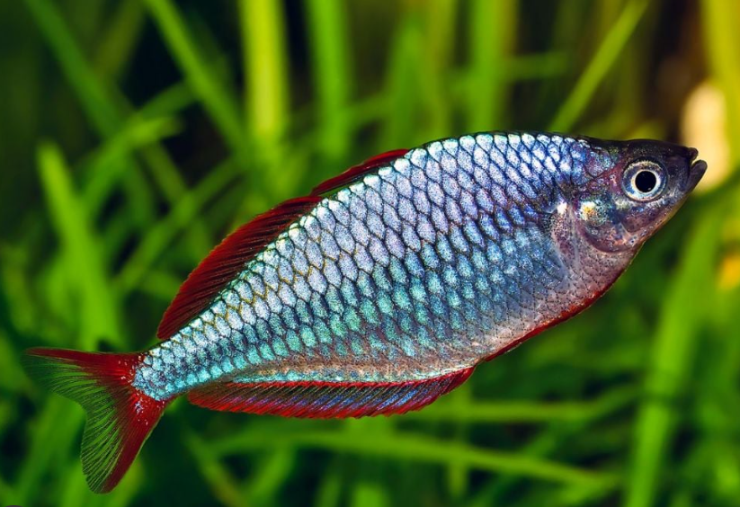
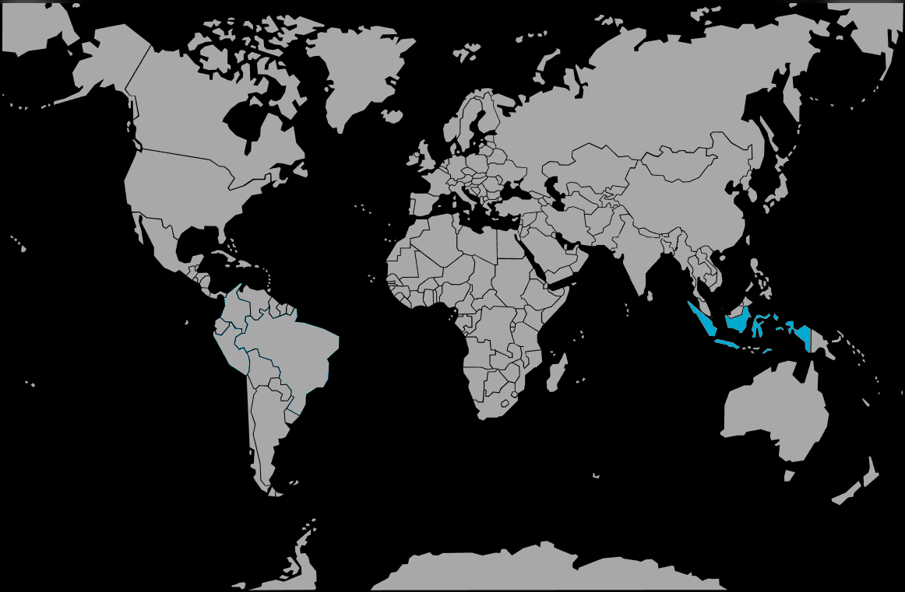

Systématique
- Ordre : Atheriniformes
- Famille : Melanotaeniidae
- Genre : Melanotaenia
- Espèce : M. praecox

Melanotaenia praecox, souvent appelé Arc-en-ciel nain, est l'un des représentants les plus populaires et les plus petits de sa famille. Originaire de Papouasie occidentale, il se distingue par son corps en forme de losange aux reflets bleu néon intenses.
Il atteint une taille adulte comprise entre 5 et 8 cm, ce qui est modeste comparé aux autres Melanotaenia qui dépassent souvent les 10-12 cm. Son nom d'espèce praecox ("précoce") fait d'ailleurs référence à sa petite taille apparente, donnant l'impression qu'il est encore juvénile même à l'âge adulte.
Les mâles sont particulièrement spectaculaires avec leurs écailles irisées et leurs nageoires rouge vif, tandis que les femelles présentent des nageoires jaune-orangé.
C'est un poisson grégaire, très actif et pacifique. Il doit impérativement être maintenu en banc d'au moins 8 à 10 individus pour limiter sa timidité et observer des interactions sociales naturelles.
C'est un nageur infatigable qui occupe la zone médiane de l'aquarium. Bien qu'il soit petit, son besoin de nage rapide nécessite un bac d'une certaine longueur. Il convient parfaitement aux bacs communautaires plantés avec d'autres espèces calmes mais actives.
Mode : ovipare.
C'est un diffuseur d'œufs sur substrat. La reproduction se fait généralement le matin, le mâle parant devant la femelle avec une ligne frontale lumineuse. Les œufs adhésifs sont déposés dans des massifs de plantes fines (mousse de Java) ou sur des mops de laine synthétique.
L'incubation dure environ une semaine. Les alevins sont très petits et nécessitent une nourriture microscopique (infusoires, poudre pour alevins) avant de pouvoir accepter les nauplies d'artémias.
Dimorphisme sexuel : Très net au niveau de la coloration des nageoires. Les mâles possèdent des nageoires impaires (dorsales, anale, caudale) bordées de rouge vif, tandis que celles des femelles sont jaunes ou orangées. Les mâles sont aussi plus hauts de corps.
Espérance de vie : Environ 3 à 5 ans en captivité.
Il est endémique du bassin de la rivière Mamberamo en Papouasie occidentale (Indonésie). Il fréquente les petits affluents, les ruisseaux forestiers et les zones marécageuses à courant lent, souvent riches en végétation aquatique et en bois mort.
Répartition

Origine naturelle :
- Océanie / Asie du Sud-Est insulaire.
- Indonésie (Papouasie occidentale).
- Bassin du fleuve Mamberamo.
Paramètres de maintenance
Température : 23 à 28 °C.
pH : 6,5 à 8,0 (préfère une eau neutre à légèrement alcaline).
GH : 5 à 15 °dGH (eau moyennement dure).
Courant : Modéré. Apprécie une eau claire et bien oxygénée.
Volume conseillé : Minimum 80 à 100 L. Une façade de 80 cm de long est un minimum pour permettre la nage de ce poisson très actif, malgré sa taille réduite.
Régime alimentaire
Régime : omnivore à tendance insectivore.
Dans la nature, il se nourrit d'insectes tombés à l'eau, de larves et d'algues.
En aquarium, il accepte tout (paillettes, granulés), mais une part végétale est recommandée. Pour intensifier ses couleurs, les nourritures vivantes ou congelées (vers de vase, daphnies, artémias) sont indispensables.